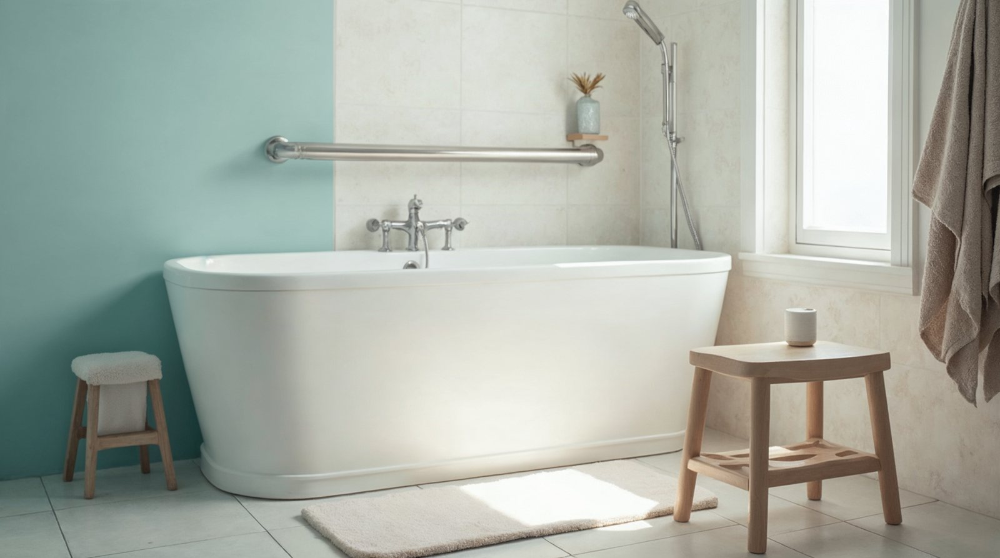
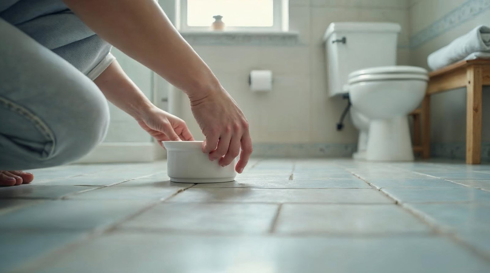
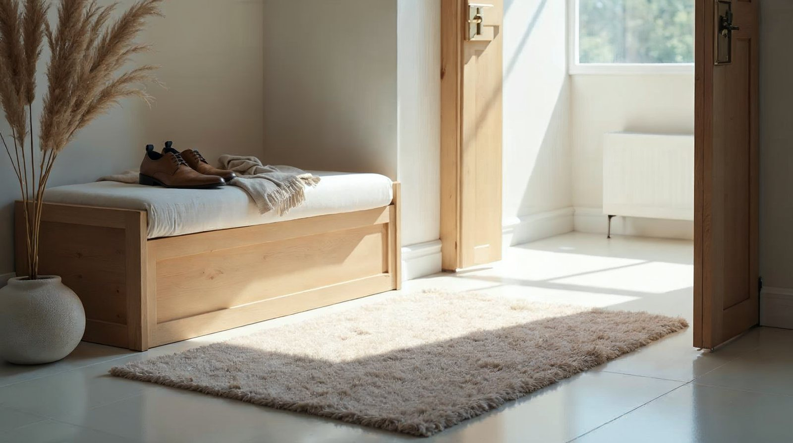
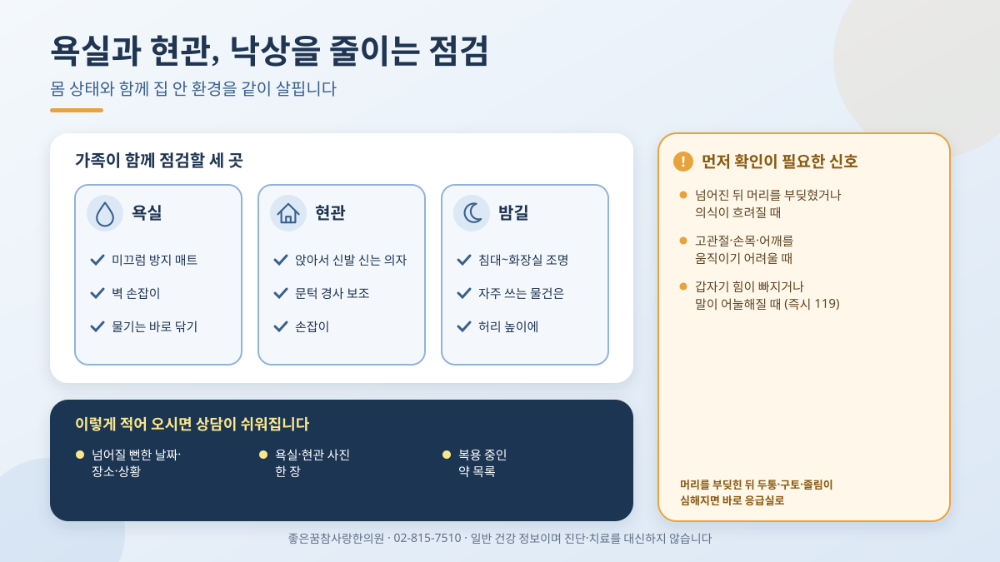

이종호 한의사 감수좋은꿈참사랑한의원 대표원장 (한의사 면허번호 19769)발행 2026-11-23 · 수정 2026-11-25
이 글의 차례
넘어지는 일은 몸이 약해서만 생기지 않습니다. 욕실 바닥의 물기, 현관 문턱, 어두운 복도가 겹치면 누구에게든 위험해, 어르신의 몸 상태와 함께 집 안 환경을 같이 살펴보는 것이 가장 현실적인 대비입니다.
왜 이런 불편이 생길 수 있나요
- 욕실은 물기와 비누 거품 때문에 바닥이 미끄럽고, 몸을 숙이거나 돌리는 동작이 많습니다.
- 현관 문턱과 서서 신발을 신는 자세는 한쪽 다리로 균형을 잡아야 해 휘청이기 쉽습니다.
- 밤에 화장실에 갈 때는 잠이 덜 깬 상태로 어두운 길을 걷게 됩니다.
- 다리 힘이 줄었거나 일어설 때 어지러운 분은 작은 턱에도 걸리기 쉽습니다.
- 겨울에는 두꺼운 양말이나 실내화, 뜨거운 물 목욕 뒤 어지럼이 겹쳐 미끄러지기 쉬운 계절입니다.
먼저 이렇게 여쭙니다
- 최근에 넘어졌거나 넘어질 뻔한 일이 있었나요? 어디에서였나요?
- 욕실과 현관에 미끄럼 방지 매트나 손잡이가 있나요?
- 밤에 화장실에 갈 때 불이 켜져 있나요?
- 일어설 때 어지러운 일이 있나요?
- 혼자 지내시는 시간이 많은가요?
- 밤에 화장실에 몇 번 일어나시나요?
일상에서 먼저 해 볼 수 있는 것
- 욕실 바닥에 미끄럼 방지 매트를 깔고 물기는 사용 후 바로 닦기
- 욕실과 현관 벽에 손잡이를 달고 문턱에는 경사 보조를 두기
- 침대에서 화장실까지 밤에도 은은하게 비추는 조명 두기
- 현관에 앉아서 신발을 신을 수 있는 의자 두기
- 자주 쓰는 물건은 허리 높이에 두어 숙이거나 발끝으로 서지 않기
- 자다가 일어날 때는 침대 가장자리에 잠시 앉았다가 천천히 일어서기
- 복도와 거실 바닥의 전선, 작은 깔개, 신문 더미 치우기

가족이 함께하는 집 점검 순서
- 욕실: 바닥 매트가 밀리지 않는지, 변기와 욕조 옆에 잡을 곳이 있는지, 샤워 의자가 있는지
- 현관: 문턱 높이, 신발 신는 의자, 발밑 조명, 신발장 손잡이 대신 잡을 수 있는 곳
- 침실에서 화장실까지: 밤 조명, 걸려 넘어질 물건, 문이 무겁거나 잘 걸리지 않는지
- 부엌·거실: 높은 선반의 물건, 바퀴 달린 의자, 미끄러운 깔개
명절이나 주말에 가족이 모일 때 한 번 함께 둘러보고 사진을 찍어 두시면, 상담 때도 집 환경을 함께 이야기하기 쉽습니다.

예를 들면 이런 경우입니다
- 예를 들어 밤마다 두세 번 화장실에 가시는 어르신이라면, 잠이 덜 깬 채 어두운 길을 걷는 횟수가 많아 침대에서 화장실까지 센서 조명을 두고, 일어서기 전에 잠시 앉아 계시도록 가족이 함께 습관을 들이는 것이 도움이 됩니다.
- 예를 들어 혼자 사시며 목욕을 오래 하시는 경우라면, 뜨거운 물 뒤 일어설 때 어지러울 수 있어 샤워 의자에 앉아 씻고, 욕실 문을 잠그지 않거나 가족과 목욕 시간을 미리 알리는 방법을 권합니다.
- 예를 들어 지난겨울 현관에서 신발을 신다 휘청인 적이 있는 경우라면, 현관 의자와 신발 주걱을 두고 굽 없는 운동화처럼 발을 잡아 주는 신발로 바꾸는 것부터 시작해 보세요.
한의원에서 함께 살필 수 있는 경우
- 걸을 때 다리에 힘이 빠지는 느낌이 있는 경우 걸음걸이와 일상 활동량을 함께 살핍니다.
- 일어설 때 어지럽거나 휘청거리는 경우 식사와 수분, 복용 중인 약과 생활 리듬을 함께 살핍니다.
- 낙상에 대한 두려움 때문에 활동이 줄어든 경우 몸 상태와 생활 방식을 함께 살핍니다.
좋은꿈참사랑한의원에서는 걷는 모습과 일어서는 동작, 한쪽 다리로 서는 균형을 확인하고 어지럼과 복용 약, 식사와 잠을 함께 여쭙니다. 필요하다고 판단될 때 침이나 추나 등을 어르신 체력에 맞춰 정하며, 가족과 함께 오시면 집 환경에서 바꿀 점을 같이 정리해 드립니다.
자주 하는 오해
- 조심하면 되지 손잡이까지 달 필요는 없다고 여기는 분이 많지만, 잡을 곳이 하나 있는 것만으로도 휘청일 때 몸을 지탱하기 쉬워집니다.
- 넘어질 뻔한 일은 다치지 않았으니 말하지 않아도 된다고 생각하기 쉬운데, 그런 일이 반복되는지가 중요한 단서라 가족과 진료실에 알려 주세요.
스스로 점검해 보세요
- 최근 1년 안에 넘어지거나 넘어질 뻔한 적이 있다
- 의자에서 일어날 때 손으로 짚어야 일어설 수 있다
- 앉았다 일어설 때 눈앞이 아찔한 적이 있다
- 밤에 화장실에 두 번 이상 간다
- 혈압약, 수면제 등 하루에 먹는 약이 여러 가지다
- 넘어질까 걱정돼 바깥 외출을 줄였다
- 욕실이나 현관에 잡을 손잡이가 없다
두세 개 이상 해당한다면 가족과 함께 집 점검을 하고, 상담 때 이 목록을 보여 주세요.

이렇게 기록해 오시면 상담이 쉬워집니다
- 넘어지거나 넘어질 뻔한 날짜, 장소, 상황
- 욕실과 현관의 손잡이·매트 유무(사진 한 장이면 충분)
- 복용 중인 약 목록
이런 증상은 먼저 확인이 필요합니다
- 넘어진 뒤 머리를 부딪혔거나 의식이 흐려진 경우
- 넘어진 뒤 고관절이나 손목, 어깨를 움직이기 어려운 경우
- 갑자기 힘이 빠지거나 말이 어눌해진 경우(즉시 응급실)
머리를 부딪힌 뒤에는 괜찮아 보여도 하루 이틀은 곁에서 지켜보고, 두통이나 구토, 졸림이 심해지면 바로 응급실로 가세요. 복용 중인 약은 처방한 의사와 상의 없이 줄이거나 끊지 않습니다.
얼마나 지켜보고, 언제 확인하면 좋을까요
- 넘어질 뻔했지만 다친 곳이 없다면, 그날의 장소와 상황을 적어 두고 집 환경을 바꾼 뒤 2~3주 동안 비슷한 일이 다시 있는지 지켜보세요.
- 한 달 안에 두 번 이상 넘어지거나 휘청이는 일이 있다면 다음 진료를 기다리지 말고 상담을 받아 보시고, 어지럼이 함께 있다면 내과나 신경과 확인도 함께 받으세요.
- 넘어진 뒤 걷거나 체중을 싣기 어렵다면 기다리지 말고 정형외과나 응급실을 먼저 이용하세요.
- 새로 약을 시작하거나 바꾼 뒤 어지럼이 생겼다면 처방한 의사에게 먼저 알려 주세요.
처음 오시면 이렇게 진행합니다
첫 방문에는 접수 때 기본 정보를 적고, 복용 중인 약 목록이 있으면 함께 내 주세요. 진료실에서는 불편한 곳과 함께 넘어질 뻔한 장소와 상황, 어지럼, 잠과 식사를 여쭙고 진맥과 신체 진찰을 합니다. 걷는 모습과 의자에서 일어서는 동작, 한쪽 다리로 서는 균형을 확인한 뒤 오늘 받을 치료와 이유를 먼저 설명드립니다.
치료 뒤에는 바로 일어서지 않고 잠시 앉아 계시다가 귀가하시도록 안내합니다. 오시는 길이나 주차가 걱정된다면 방문 전 전화(02-815-7510)로 확인해 주세요.
관련 글
- 60대가 밤에 화장실에 가다가 어지러울 때 낙상은 어떻게 예방하나요?
- 앉았다 일어설 때 어지러운 것은 어떤 점을 살펴보나요?
- 어르신에게 추나요법은 어떤 점을 조심하며 진행하나요?

여쭙는 것
- 최근에 넘어졌거나 넘어질 뻔한 일이 있었나요? 어디에서였나요?
- 욕실과 현관에 미끄럼 방지 매트나 손잡이가 있나요?
- 밤에 화장실에 갈 때 불이 켜져 있나요?
생활에서 해 볼 것
- 욕실 바닥에 미끄럼 방지 매트를 깔고 물기는 사용 후 바로 닦기
- 욕실과 현관 벽에 손잡이를 달고 문턱에는 경사 보조를 두기
- 침대에서 화장실까지 밤에도 은은하게 비추는 조명 두기
한의원에서 함께 살필 것
- 걸을 때 다리에 힘이 빠지는 느낌이 있는 경우 걸음걸이와 일상 활동량을 함께 살핍니다.
- 일어설 때 어지럽거나 휘청거리는 경우 식사와 수분, 복용 중인 약과 생활 리듬을 함…
- 낙상에 대한 두려움 때문에 활동이 줄어든 경우 몸 상태와 생활 방식을 함께 살핍니다.
먼저 확인이 필요한 신호
- 넘어진 뒤 머리를 부딪혔거나 의식이 흐려진 경우
- 넘어진 뒤 고관절이나 손목, 어깨를 움직이기 어려운 경우
- 갑자기 힘이 빠지거나 말이 어눌해진 경우(즉시 응급실)
한눈에 보는 표
| 구분 | 핵심 |
|---|---|
| 여쭙는 것 | 최근에 넘어졌거나 넘어질 뻔한 일이 있었나요? 어디에서였나요? 욕실과 현관에 미끄럼 방지 매트나 손잡이가 있나요? |
| 생활에서 해 볼 것 | 욕실 바닥에 미끄럼 방지 매트를 깔고 물기는 사용 후 바로 닦기 욕실과 현관 벽에 손잡이를 달고 문턱에는 경사 보조를 두기 |
| 한의원에서 함께 살필 것 | 걸을 때 다리에 힘이 빠지는 느낌이 있는 경우 걸음걸이와 일상 활동량을 함께 살핍니다. 일어설 때 어지럽거나 휘청거리는 경우 식사와 수분, 복용 중인 약과 생활 리듬을 함께 살핍니다. |
| 먼저 확인이 필요한 신호 | 넘어진 뒤 머리를 부딪혔거나 의식이 흐려진 경우 넘어진 뒤 고관절이나 손목, 어깨를 움직이기 어려운 경우 |
자주 묻는 질문
집 안 조명은 얼마나 밝아야 하나요?
눈부시지 않으면서 발밑이 잘 보이는 밝기가 좋습니다. 밤에는 센서 조명이 도움이 될 수 있습니다.
슬리퍼를 신고 다녀도 되나요?
헐렁한 슬리퍼는 걸려 넘어지기 쉬워, 발을 잡아 주고 바닥이 미끄럽지 않은 신발이 더 안전합니다.
가족은 무엇을 도울 수 있나요?
집 환경을 함께 점검하고 어르신이 혼자 하기 어려운 동작을 나누어 도와드리는 것이 좋습니다.
넘어질까 무서워 집에만 계시는데 괜찮을까요?
움직임이 줄면 다리 힘이 더 약해질 수 있어, 안전한 환경을 갖춘 뒤 가족과 함께 짧은 산책부터 이어 가시기를 권합니다.
좋은꿈참사랑한의원은 재진 때 지난번 이야기부터 이어서 여쭙니다. 진료시간과 예약은 오시는 길에서 확인하세요.
어디서 상담받을 수 있나요?
좋은꿈참사랑한의원은 서울 동작구 만양로2길 2 신성빌딩 3층·5층(서울 동작구 상도동, 7호선 상도역 3번 출구 근처)에 있습니다. 한의사 3명(이종호 대표원장, 조영기 수석진료원장, 정원영 진료원장)이 진료합니다. 진료시간은 평일 09:30~20:00(점심 13:00~14:00), 토·일·공휴일 09:30~15:00이며, 방문 전 전화로 확인을 권합니다. 예약은 네이버 예약, 카카오톡 상담, 전화 02-815-7510로 받습니다.
이 글은 일반적인 건강 정보이며 개인의 진단이나 치료를 대신하지 않습니다. 증상이 있거나 복용 중인 약이 있다면 진료를 통해 확인하세요. 치료 효과는 개인마다 다를 수 있습니다.
작성 기준: 일반적으로 알려져 있는 건강 정보를 참고해 정리했습니다(대표원장 감수). 증상 기록은 1~2주 동안 하루 1회, 비슷한 시간에 적어 오시면 지난 상태와 비교하기 쉽습니다.